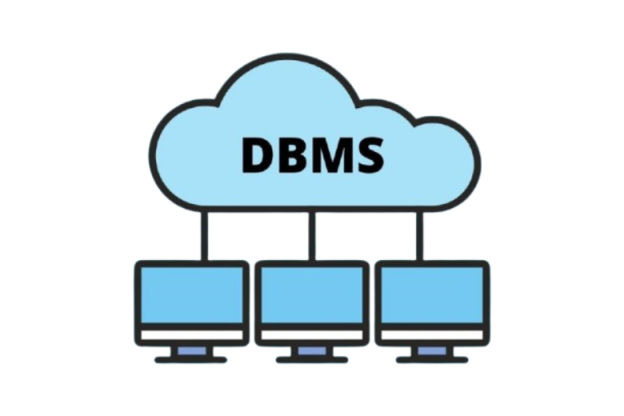
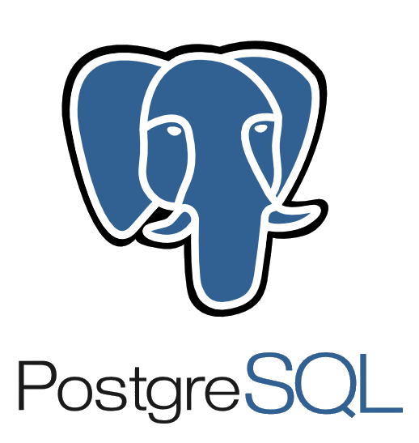
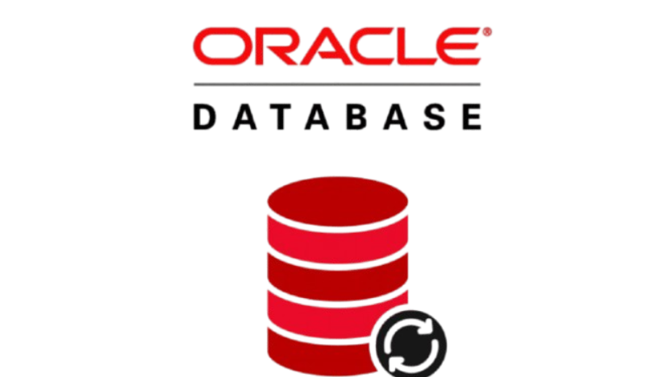

La imagen representa un modelo conceptual de manejador de bases de datos donde múltiples usuarios acceden a la información almacenada de manera concurrente y segura.
Ejemplos de DBMS Populares
-
 MySQL: Un sistema de gestión de bases de datos relacional ampliamente utilizado.
MySQL: Un sistema de gestión de bases de datos relacional ampliamente utilizado. -

PostgreSQL: Sistema avanzado con soporte para objetos complejos y transacciones.
-
 MongoDB: Base de datos NoSQL orientada a documentos.
MongoDB: Base de datos NoSQL orientada a documentos. -

Oracle: DBMS para aplicaciones empresariales de gran escala.